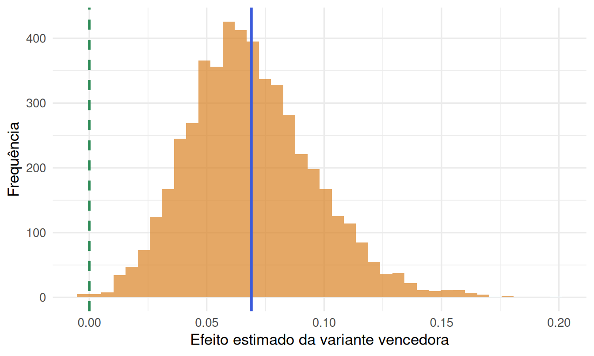

8.1 Parte I — Testes A/B como delineamento completamente aleatorizado
8.1.1 Um teste A/B é um delineamento completamente aleatorizado
Tire o vocabulário de produto — “variante”, “conversão”, “tráfego” — e o que resta é exatamente o delineamento completamente aleatorizado (DCA) de dois tratamentos do Capítulo 3, na notação de resultados potenciais estabelecida na Seção 1.4.3 do Capítulo 1. A unidade experimental \(i\) é o usuário (ou, mais precisamente, a sessão ou o dispositivo, dependendo de como o sistema de experimentação identifica “quem” está sendo tratado — voltaremos a essa sutileza). O tratamento \(Z_i \in \{0,1\}\) indica se o usuário \(i\) foi alocado para o controle (“A”, a versão atual do produto) ou para a variante (“B”, a mudança proposta). Cada usuário tem dois resultados potenciais, \(Y_i(0)\) e \(Y_i(1)\) — por exemplo, um indicador binário de conversão (comprou ou não, em uma sessão), o tempo gasto na página, ou a receita gerada — mas o sistema só observa um deles, \(Y_i = Z_iY_i(1) + (1-Z_i)Y_i(0)\), exatamente como na equação ((8.1)) abaixo, que repete a estrutura da Seção 1.4.3:
\[\begin{equation} Y_i = Z_i\,Y_i(1) + (1-Z_i)\,Y_i(0), \qquad Z_i \sim \text{Bernoulli}(1/2) \text{ (tipicamente)}, \tag{8.1} \end{equation}\]
com \(Z_i\) sorteado independentemente entre usuários. O estimando de interesse é o efeito médio do tratamento,
\[ \text{ATE} = E[Y_i(1) - Y_i(0)], \]
que no caso mais comum de uma métrica binária de conversão se reduz a uma diferença de proporções, \(\text{ATE} = p_1 - p_0\), com \(p_1 = P(Y_i(1)=1)\) e \(p_0 = P(Y_i(0)=1)\). O estimador natural,
\[ \widehat{\text{ATE}} = \bar Y_1^{\,obs} - \bar Y_0^{\,obs} = \hat p_1 - \hat p_0, \]
é exatamente a diferença de médias amostrais do Capítulo 3, e a demonstração de \(E[\widehat{\text{ATE}}]=\text{ATE}\) da Seção 1.4.3 se aplica sem alteração alguma: não depende do contexto (parcela agrícola, estudante ou usuário de site), só do mecanismo de aleatorização. Em notação de modelo linear (Capítulo 2), o mesmo problema se escreve
\[ Y_i = \beta_0 + \beta_1 Z_i + \varepsilon_i, \qquad i=1,\dots,N, \]
com \(\hat\beta_1\) (o coeficiente de \(Z_i\) em uma regressão OLS de \(Y\) contra o indicador de tratamento) numericamente idêntico a \(\hat p_1 - \hat p_0\) — a regressão com um único regressor binário é o teste de duas amostras, um fato que já usamos implicitamente no Capítulo 3 e que aqui simplesmente reaparece com outro nome de aplicação.
O que muda de fato, em relação ao DCA de laboratório do Capítulo 3, é a mecânica de aleatorização. Um pesquisador de psicologia sorteia 36 voluntários e anota manualmente quem recebeu qual condição; uma plataforma digital recebe milhões de requisições por segundo e precisa decidir, em tempo real e sem consultar um banco de dados central, se um usuário específico vê a versão A ou B — e precisa que a mesma pessoa continue vendo a mesma versão em visitas subsequentes (senão a “unidade experimental” se confunde com a “unidade de observação”, o mesmo problema de submuestreo da Seção 1.2, só que ao contrário: aqui queremos evitar múltiplas atribuições da mesma unidade). A solução industrial padrão é a aleatorização por hash: aplica-se uma função hash determinística (por exemplo, MD5 ou MurmurHash) ao identificador do usuário concatenado com um identificador do experimento, e o resultado — um número pseudoaleatório, mas reprodutível para o mesmo par (usuário, experimento) — decide o grupo. Isso tem duas propriedades cruciais: (1) a mesma pessoa sempre cai no mesmo grupo dentro de um mesmo experimento, preservando a unidade experimental como o usuário e não a visita; e (2) usada com “seeds” (sementes de hash) diferentes por experimento, a mesma pessoa pode estar em experimentos diferentes e não correlacionados ao mesmo tempo, o que viabiliza rodar milhares de testes A/B simultâneos sem que a alocação de um contamine a de outro (Kohavi et al., 2020).
Uma loja online quer saber se trocar a cor do botão "Finalizar compra" de cinza para verde aumenta a taxa de conversão. O sistema de experimentação faz o hash do
user_id de cada
visitante e atribui metade a cada grupo — grupo A (cinza, controle) e grupo B (verde, variante).
Cada visitante $i$ tem um resultado potencial binário $Y_i(0)$ (converteria vendo cinza?) e
$Y_i(1)$ (converteria vendo verde?), mas o hash decide qual dos dois é revelado. Ao final de duas
semanas de tráfego, o time compara $\hat p_1$ (conversão observada no grupo B) com $\hat p_0$
(conversão observada no grupo A).
Do ponto de vista puramente algébrico, portanto, não há nada de novo aqui — e é exatamente por isso que testes A/B se popularizaram tão rápido: qualquer time de produto, sem treinamento formal em delineamento de experimentos, consegue programar um teste de duas amostras. O que a Seção seguinte argumenta é que a facilidade de implementar um teste A/B tecnicamente correto é enganosa — o contexto de alto volume, métricas ruidosas e pressão para decidir rápido introduz uma família de armadilhas estatísticas que raramente aparecem no experimento de bancada clássico.
8.1.2 Por que testes A/B em produtos digitais são estatisticamente difíceis
Se a matemática é a mesma do Capítulo 3, por que Kohavi, Tang e Xu dedicam um livro inteiro (2020) só às dificuldades práticas de rodar testes A/B “à escala”? Quatro razões concentram a maior parte do problema.
Efeitos pequenos, variância grande. Uma mudança de layout raramente move a taxa de conversão de um site em mais do que uma fração de ponto percentual — de \(p_0=10{,}0\%\) para \(p_1=10{,}3\%\), digamos. Para uma proporção, a variância do estimador \(\hat p\) é \(p(1-p)/n\), que para \(p\approx0{,}1\) não é pequena em termos relativos: detectar uma diferença de \(0{,}3\) pontos percentuais com poder razoável (\(1-\beta=0{,}8\), \(\alpha=0{,}05\)) exige, pela fórmula de tamanho amostral para duas proporções análoga à da Seção de poder do Capítulo 3,
\[ n \approx \frac{\big(z_{\alpha/2} + z_\beta\big)^2 \big[p_0(1-p_0) + p_1(1-p_1)\big]}{(p_1-p_0)^2}, \]
algo da ordem de centenas de milhares de usuários por grupo — perfeitamente viável para uma plataforma grande, impossível para a maioria dos experimentos de laboratório do resto deste livro. Métricas de receita são ainda piores: distribuições fortemente assimétricas, com uma minoria de usuários de alto gasto dominando a variância, de modo que o denominador \(p_1(1-p_1)\) acima subestima muito a dificuldade real de detectar efeitos em métricas monetárias.
Múltiplas métricas e múltiplos testes simultâneos. Um teste A/B raramente monitora uma única métrica. Times de produto acompanham um OEC (Overall Evaluation Criterion, a métrica de decisão primária) junto de dezenas de métricas secundárias e de “guarda-corpo” (guardrail metrics — métricas que não deveriam piorar, como tempo de carregamento ou taxa de erro). Ver dezenas de métricas simultaneamente é, estruturalmente, o mesmo problema do 3.7: sob \(\alpha=0{,}05\) por métrica, a chance de pelo menos um falso positivo entre 20 métricas independentes já passa de \(64\%\) (\(1-(1-0{,}05)^{20}\approx0{,}64\)). A prática recomendada por Kohavi et al. (2020) — escolher o OEC antes de rodar o teste e tratá-lo com o rigor de uma hipótese pré-registrada, deixando as métricas secundárias para geração de hipóteses, não confirmação — é uma aplicação direta do princípio contra data snooping já discutido na Seção 3.7.1.
Efeito de novidade (e o oposto, efeito de primazia). Uma mudança de interface pode gerar uma reação inicial que não reflete o efeito de longo prazo: usuários clicam em um botão só porque ele é diferente (efeito de novidade, que infla o efeito estimado nos primeiros dias e desaparece depois), ou resistem a uma mudança só por ser mudança, mesmo que objetivamente melhor (efeito de primazia, que faz o teste subestimar o efeito real até os usuários se acostumarem). Isso viola implicitamente uma suposição que o Capítulo 1 deixou implícita ao tratar \(Y_i(t)\) como fixo: aqui, o resultado potencial de um usuário que permanece exposto ao tratamento por semanas não é constante no tempo, e o “ATE médio nas primeiras 48 horas” pode ser um estimando diferente do “ATE médio de longo prazo” que o time de produto realmente quer.
Dependência temporal dentro do mesmo usuário. O mesmo usuário volta ao site várias vezes ao longo do período do teste, e cada visita gera uma observação — mas, exatamente como no problema de submuestreo formalizado na Seção 1.2, essas observações repetidas não são réplicas independentes: são correlacionadas dentro do usuário (alguém propenso a comprar tende a comprar em várias visitas; alguém que nunca compra continua não comprando). Tratar cada visita como uma unidade experimental independente — em vez de agregar por usuário antes de testar, como manda o princípio de submuestreo do Capítulo 1 — infla artificialmente o tamanho amostral efetivo e produz erros-padrão anticonservadores, exatamente o mesmo erro de pseudorreplicação identificado naquela seção, só que reaparecendo aqui sob um nome de produto diferente.
p0 <- 0.10
p1 <- 0.103 # lift de 0,3 ponto percentual — típico de um teste de UI em e-commerce
poder_ab <- power.prop.test(p1 = p0, p2 = p1, sig.level = 0.05, power = 0.80)
poder_ab$n## [1] 159065.5| Cenário | n por grupo |
|---|---|
| Lift de 0,3 p.p. (UI) | 159066 |
| Lift de 1,0 p.p. (feature nova) | 14751 |
| Lift de 3,0 p.p. (mudança grande) | 1774 |
O contraste é gritante: para detectar um efeito realista de UI (0,3 ponto percentual) são necessários mais de 159,066 usuários por grupo — um volume que só faz sentido em contexto de alto tráfego, e que explica por que testes A/B de produto digital são projetados de forma tão diferente de um experimento de bancada com 30 ou 40 sujeitos.
8.1.3 O problema do “peeking”
A teoria do teste \(t\)/\(F\) clássica pressupõe que o tamanho amostral \(n\) é fixo antes da coleta e a decisão de rejeitar ou não \(H_0\) é tomada uma única vez, depois que todos os \(n\) dados foram coletados. É essa suposição — não nenhuma outra — que garante que \(P(\text{rejeitar } H_0\mid H_0\text{ verdadeira}) = \alpha\) exatamente. Em um ambiente de produto, porém, é natural (e tentador) olhar o painel de resultados do teste todos os dias, calcular o valor-\(p\) a cada olhada, e parar assim que ele cruza \(0{,}05\) — prática conhecida como peeking (“espiar”). O problema é que essa prática transforma silenciosamente o procedimento em outro completamente diferente: em vez de “um teste com \(\alpha=0{,}05\)”, o que se está executando é “uma sequência de testes, parando no primeiro que rejeitar” — e a probabilidade de que pelo menos um desses testes rejeite, mesmo sob \(H_0\) verdadeira, é muito maior que \(0{,}05\) (Johari et al., 2017).
A intuição por trás da inflação vem de um argumento de passeio aleatório: sob \(H_0\), a estatística de teste acumulada ao longo do tempo (por exemplo, a diferença de proporções observadas até o instante \(t\)) evolui como um processo estocástico que oscila em torno de zero, com variância crescente. Um resultado clássico de teoria de sequências (relacionado à lei do logaritmo iterado) garante que, se o processo é observado continuamente e o pesquisador para assim que ele cruza qualquer limiar fixo, o cruzamento acontece quase certamente, mesmo que a média do processo seja exatamente zero — basta esperar o tempo suficiente. Checar o valor-\(p\) repetidamente e parar no primeiro cruzamento de \(0{,}05\) é uma versão discreta exatamente desse fenômeno: quanto mais vezes se olha, maior a chance de que, só por acaso, uma das checagens caia abaixo do limiar.
A forma matematicamente correta de testar sequencialmente — permitindo checagens repetidas sem inflar \(\alpha\) — não é simplesmente “não olhar”, mas usar um procedimento desenhado para isso. O teste sequencial de razão de verossimilhança (SPRT, sequential probability ratio test) de Wald (1945) formaliza a ideia: em vez de um limiar fixo de significância aplicado a um \(n\) fixo, o SPRT define dois limiares \(A\) e \(B\) para a razão de verossimilhanças acumulada \(\Lambda_n = \prod_{i=1}^n f_1(Y_i)/f_0(Y_i)\) entre a hipótese alternativa e a nula, e continua coletando dados enquanto \(B < \Lambda_n < A\), parando para rejeitar \(H_0\) assim que \(\Lambda_n \geq A\) e para não rejeitar assim que \(\Lambda_n \leq B\). Escolhendo \(A\) e \(B\) em função dos erros tipo I e II desejados (\(A \approx (1-\beta)/\alpha\), \(B \approx \beta/(1-\alpha)\)), o SPRT garante as mesmas taxas de erro nominal do teste de tamanho fixo, mesmo permitindo parar a qualquer momento — a diferença crucial é que os limiares de decisão do SPRT são derivados especificamente para controlar o erro acumulado de múltiplas checagens, ao passo que reaplicar ingenuamente o limiar \(p<0{,}05\) do teste de tamanho fixo a cada checagem não tem essa propriedade. Ferramentas modernas de teste sequencial em produto (testes de razão de verossimilhança sempre válidos, always-valid p-values) generalizam essa ideia para o contexto de testes A/B contínuos (Johari et al., 2017), mas o princípio já está inteiro no SPRT de 1945.
A simulação a seguir gera dados sob \(H_0\) verdadeira (as duas variantes têm exatamente a mesma taxa de conversão, \(p=0{,}10\)) e compara duas formas de decidir: (i) checar o valor-\(p\) a cada 100 usuários acumulados, até um máximo de 2.000 por grupo, e parar assim que \(p<0{,}05\) (“peeking”); e (ii) checar uma única vez, ao final dos 2.000 usuários. Sob \(H_0\), ambas deveriam rejeitar cerca de \(5\%\) das vezes — a pergunta é se de fato rejeitam.
set.seed(2026)
n_max <- 2000 # tamanho amostral maximo por braco
checagens <- seq(100, n_max, by = 100) # instantes de checagem (a cada 100 usuarios)
n_sim <- 3000 # replicas Monte Carlo
alpha <- 0.05
p_H0 <- 0.10 # mesma taxa de conversao nos dois bracos (H0 verdadeira)
simula_uma_replica <- function() {
grupo_a <- rbinom(n_max, 1, p_H0)
grupo_b <- rbinom(n_max, 1, p_H0)
rejeitou_com_peeking <- FALSE
for (n in checagens) {
xa <- sum(grupo_a[1:n]); xb <- sum(grupo_b[1:n])
pval <- suppressWarnings(prop.test(c(xa, xb), c(n, n), correct = FALSE)$p.value)
if (!is.na(pval) && pval < alpha) { rejeitou_com_peeking <- TRUE; break }
}
pval_tamanho_fixo <- suppressWarnings(
prop.test(c(sum(grupo_a), sum(grupo_b)), c(n_max, n_max), correct = FALSE)$p.value
)
c(peeking = rejeitou_com_peeking, fixo = pval_tamanho_fixo < alpha)
}
resultado_peeking <- replicate(n_sim, simula_uma_replica())
taxa_peeking <- mean(as.logical(resultado_peeking["peeking", ]))
taxa_fixo <- mean(as.logical(resultado_peeking["fixo", ]))
tibble(
Procedimento = c("Checagem única (n fixo = 2.000)", "Peeking a cada 100 (até n = 2.000)"),
`Taxa de rejeição sob H0` = c(taxa_fixo, taxa_peeking)
) %>%
kable(digits = 3, caption = "Taxa de falso positivo observada em 3.000 réplicas Monte Carlo sob H0 verdadeira") %>%
kable_styling(full_width = FALSE)| Procedimento | Taxa de rejeição sob H0 |
|---|---|
| Checagem única (n fixo = 2.000) | 0.051 |
| Peeking a cada 100 (até n = 2.000) | 0.251 |
A checagem única fica, como esperado, muito próxima do \(\alpha\) nominal de 0.05 (5.1% observado). Com peeking a cada 100 usuários — só 20 checagens ao longo de todo o experimento, uma frequência bem menor do que o “olhar o painel todo dia” que de fato acontece em produto — a taxa de falso positivo salta para 25.1%, quase 4.9 vezes o valor nominal. Nenhuma das duas variantes tinha qualquer efeito real: a diferença inteira vem do procedimento de parada. Esse é o argumento numérico por trás da recomendação, universal em times de experimentação de produto, de nunca decidir “parar porque ficou significativo” sem um procedimento sequencial formal (SPRT ou equivalente) desenhado para isso.
8.1.4 Vício do vencedor (winner’s curse)
Um problema relacionado, mas distinto, aparece quando várias variantes são testadas ao mesmo tempo contra o controle (um teste “A/B/n”) e a decisão final é lançar a variante com a maior diferença estimada. Mesmo que todas as variantes tenham, na verdade, o mesmo efeito verdadeiro — inclusive nulo —, a variante escolhida por ter a maior estimativa amostral tende a ter sua estimativa viesada para cima, simplesmente por ter sido selecionada por ser a maior entre várias estimativas ruidosas. Esse fenômeno, batizado de vício do vencedor (por analogia a leilões, em que o lance vencedor tende a superestimar o valor real do item), é uma consequência direta de estatística de ordem: entre \(k\) estimativas não-viesadas mas ruidosas de um mesmo parâmetro, o máximo delas tem expectativa maior do que o parâmetro verdadeiro, e a diferença cresce com \(k\) (mais variantes testadas) e com a variância de cada estimativa individual.
Formalmente, sejam \(\hat\delta_1,\dots,\hat\delta_k\) as diferenças estimadas de \(k\) variantes contra o controle, cada uma com \(\hat\delta_j \sim N(\delta, \sigma^2)\) sob a suposição (deliberada, para isolar o fenômeno) de que o efeito verdadeiro \(\delta\) é o mesmo para todas. A variante escolhida é \(j^\star = \arg\max_j \hat\delta_j\), e o vício do vencedor é a quantidade
\[ E\big[\hat\delta_{j^\star}\big] - \delta = E\Big[\max_j \hat\delta_j\Big] - \delta > 0, \]
estritamente positiva sempre que \(k>1\) e \(\sigma^2>0\) — uma consequência do fato de que o máximo de variáveis aleatórias tem expectativa maior ou igual à expectativa comum de cada uma (com igualdade só no caso degenerado \(\sigma^2=0\)). É o mesmo fenômeno estatístico, com sinal trocado, por trás da “regressão à média”: medições extremas tendem a ser seguidas por medições mais próximas da média, porque parte do que as tornou extremas foi ruído, não sinal persistente.
set.seed(2026)
n_variantes <- 10 # variantes testadas simultaneamente contra o controle
n_por_variante <- 500 # usuarios por variante
efeito_real <- 0 # todas as variantes tem, de fato, o MESMO efeito verdadeiro
sigma <- 1 # desvio-padrao da metrica (escala padronizada)
n_sim <- 5000 # replicas Monte Carlo
simula_vencedora <- function() {
estimativas <- rnorm(n_variantes, mean = efeito_real, sd = sigma / sqrt(n_por_variante))
estimativas[which.max(estimativas)]
}
estimativas_vencedoras <- replicate(n_sim, simula_vencedora())
vies_vencedor <- mean(estimativas_vencedoras) - efeito_real
tibble(
Quantidade = c("Efeito verdadeiro (idêntico em todas as variantes)",
"Média das estimativas da variante vencedora (5.000 réplicas)",
"Vício do vencedor"),
Valor = c(efeito_real, mean(estimativas_vencedoras), vies_vencedor)
) %>%
kable(digits = 4, caption = "Vício do vencedor: efeito estimado da melhor entre 10 variantes idênticas") %>%
kable_styling(full_width = FALSE)| Quantidade | Valor |
|---|---|
| Efeito verdadeiro (idêntico em todas as variantes) | 0.0000 |
| Média das estimativas da variante vencedora (5.000 réplicas) | 0.0691 |
| Vício do vencedor | 0.0691 |

Figure 8.1: Distribuição, sobre 5.000 réplicas Monte Carlo, do efeito estimado da variante vencedora (a de maior estimativa entre 10 variantes com efeito verdadeiro idêntico), com o efeito verdadeiro (zero) marcado pela linha tracejada.
Com efeito verdadeiro igual a zero em todas as 10 variantes, a variante escolhida por
ter a maior estimativa amostral aparenta, em média, um efeito de
0.069 — inteiramente espúrio, produto só da seleção pelo máximo entre r n_variantes estimativas ruidosas. A linha tracejada verde no gráfico marca o efeito verdadeiro
(zero); a linha sólida azul marca a média das estimativas vencedoras — a distância entre as duas é
o vício do vencedor. Isso não é um argumento contra testar várias variantes (testar várias ideias
ao mesmo tempo é eficiente), mas um argumento contra lançar uma variante com base só na
estimativa do próprio teste que a selecionou: a prática recomendada em times de experimentação
maduros é re-testar a variante vencedora isoladamente, contra o controle, em uma segunda rodada com
tráfego novo — um procedimento de validação fora da amostra que quebra exatamente o mecanismo de
seleção que produz o vício, análogo em espírito à separação treino/validação usada para evitar
sobreajuste em modelos preditivos.
- A seção sobre validade interna e externa do Capítulo 1 distingue validade interna (a estimativa é não-viesada para o ATE da amostra estudada) de validade externa (o resultado generaliza para além dela). Usuários que efetivamente participam de um teste A/B — em geral uma fração do tráfego total, às vezes restrita a uma região, uma versão de aplicativo ou um segmento de usuários "elegíveis" para o experimento — são uma amostra aleatória de todos os usuários da plataforma, ou apenas do subconjunto elegível? Que diferença prática isso faz para decidir se o resultado se generaliza quando a mudança for lançada para 100% da base?
- Se um teste A/B roda só durante uma semana de dezembro (alta temporada de compras), que tipo de ameaça à validade externa isso introduz, além da amostragem de usuários em si?
- Uma plataforma com efeitos de rede (por exemplo, uma rede social, ou um marketplace de duas pontas) testa uma mudança que afeta a visibilidade de conteúdo. Por que a suposição SUTVA (seção sobre o modelo de resultados potenciais, no Capítulo 1) — o resultado potencial de um usuário depende só do seu tratamento, não do tratamento dos demais — é particularmente frágil nesse tipo de produto? O que pode dar errado ao interpretar o teste como se SUTVA valesse?